Selected work / AAKO · Chapter I / Spatial prototyping
Echo
Giving a memory a presence in space.
A 3D post that gives images, sound, and text a physical form—the smallest spatial unit of AAKO, an XR memory app, and the foundation the rest of the product was built around.
Leave a memory in the place where it happened.
AAKO started from road trips. The founder and I have been friends since middle school and have traveled across many countries together. A trip pulls you out of ordinary life, and that displacement makes places stick.
Modern tools capture everything but strip memories of context: in a chronological feed, moments lose where they happened and how they felt. AAKO set out to leave memories in the physical places where they happened, and let people encounter them again through AR.
Within that, I designed Echo: the 3D form a memory takes in space.
No competitor had an actual entity of what a post is.
Apps that touch on place, memory, and sharing—Google Maps, Instagram, Yik Yak, Yelp—still rely on linear thread models from the early 2000s. A post is a row in a feed, not a thing. The goal: a 3D post that occupies space and extends communication into the physical world.
| Today A post in a feed |
AAKO An Echo |
|
|---|---|---|
| Form | A row in a thread | An object with a physical form |
| Lives in | A timeline, grouped by topic or user | The place it happened |
| Holds | Images and text | Images, video, sound, and text |
| You meet it by | Scrolling | Being there (AR), or returning from afar (VR) |
Visual inspiration: mystery solving and conquering · a sense of achievement · reflections of the object and its surroundings · dreamy, childhood, nostalgia.
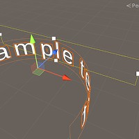
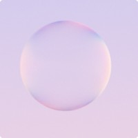
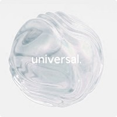
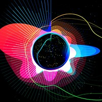
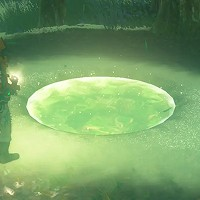
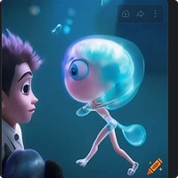
How does a moment come back?
Before deciding what an Echo should hold, I studied which cues help someone reconnect with a memory—and what sound alone leaves out. Participants worked with their own photos and videos.
Study A / Audio + contextual prompts
Listen first. Add context gradually.
- Pick a random video from the participant’s own library.
- Play only its audio.
- Ask what they remember.
- If recall is thin, add clues one at a time: year, season, time, location.
- Note which clue brings the moment back.
Study B / Related environment imagery
Show the setting, not the original video.
- Find photos of the same place or occasion.
- Show those instead of the video.
- Ask whether the surroundings bring the event back.
e.g. a photo of a beach brought back building a sandcastle with friends.
Context gives a memory somewhere to land.
Three directions I took into the design—as inputs to keep testing, not as established findings.
- Audio onlyA mood, rarely the event
- + Time / seasonWhen it happened
- + Place / environmentWhere it happened
- RecollectionThe moment comes back
How recall built up as cues were added—a conceptual sequence, not a measured funnel.
- 01 / Visual & environmental
The surroundings can unlock the event.
Location mattered as lived context, not as a coordinate. Audio alone was not a sufficient anchor.
- 02 / Temporal hierarchy
Season can be more meaningful than year.
Exact years were fuzzy; spring, summer, autumn, or winter often triggered more. Design for how people remember time, not how a database stores it.
- 03 / Context-dependent precision
More precise isn’t always more useful.
Minute-level detail rarely helped—unless the setting was time-specific, like a bar at night.
That’s why an Echo combines sound, imagery, and place rather than relying on any one of them.
A floating bubble that makes a memory alive.
The question was how a memory could occupy a place while staying easy to read. Each part of the Echo carries one kind of content.
- Bubble
A memory, alive in space.
- Visual content
Images and video, viewable from any angle.
- Text
Caption and user info, with activity emoji for search.
- Audio
A recording, the video’s sound, or music.
- Emoji orbit
Other people’s reactions.
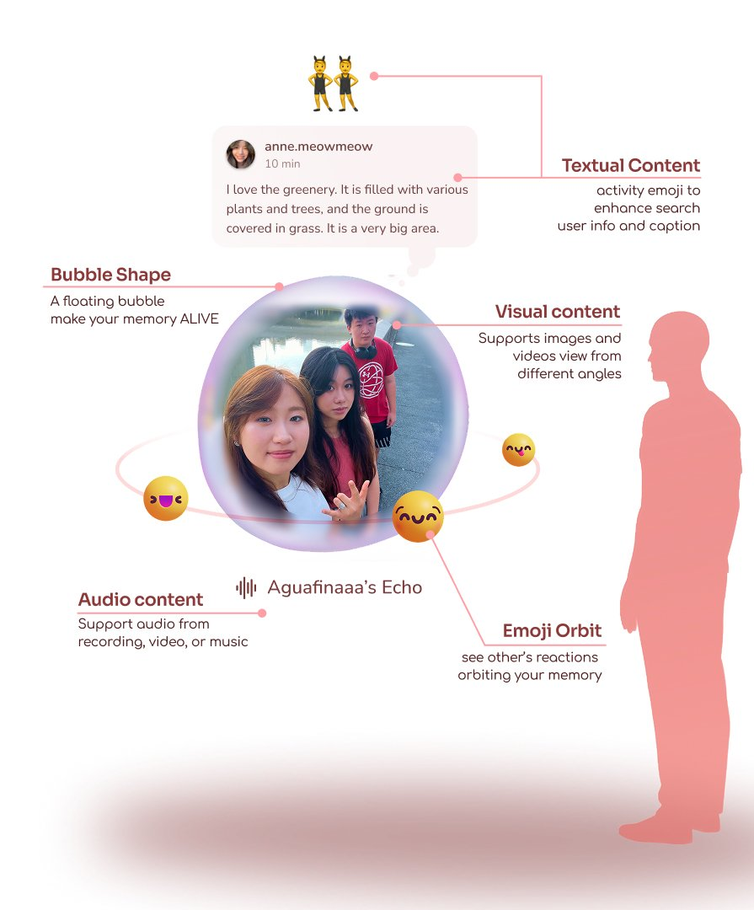
The purple bubble is the default; the same structure supports other skins with different textures and features, which users could purchase.
Intimate rather than schematic.
I tested Niantic Lightship, Unity, and Apple ARKit. The deciding factor was material softness and lighting—a memory shouldn’t look like a map pin.
| Niantic Lightship | Unity | RealityKit (Apple) | |
|---|---|---|---|
| Strength | Large-scale outdoor tracking | Flexible, cross-platform 3D engine | Visual fidelity; tight integration with iOS hardware |
| For AAKO | Too utilitarian; limited control over softness and lighting | A separate engine layer; less tightly integrated with iOS hardware | Chosen—memories feel intimate, not schematic |
- BeforeUnlit caption board; harsh boundary around the image.
- BlendSoftened the boundary; the caption board blends into its surroundings.
- TestChecked the result in dark environments.
- SkinsA node shader makes new bubble skins easy.
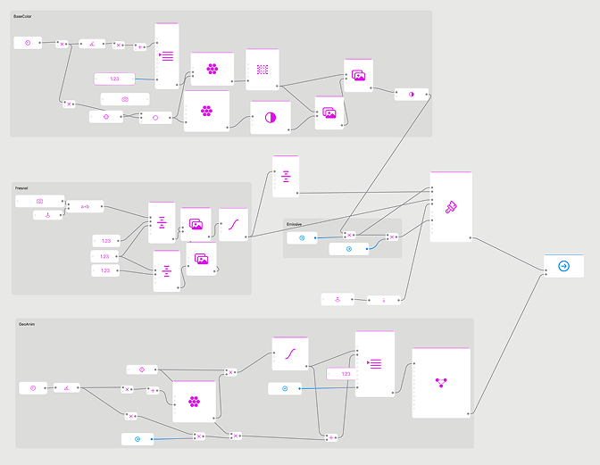
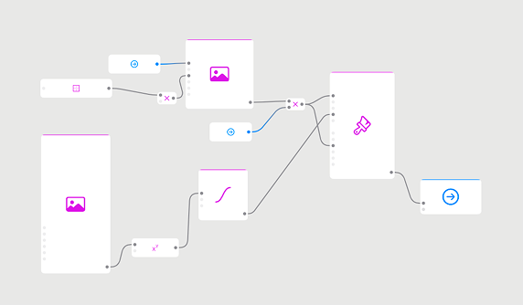
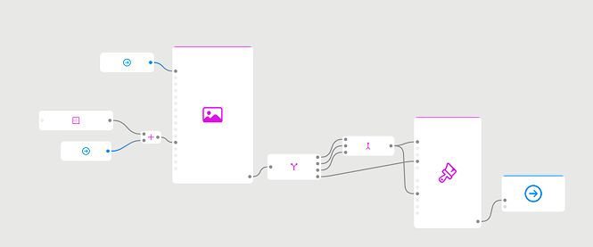
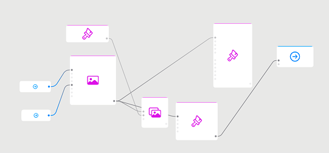
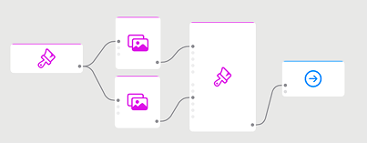
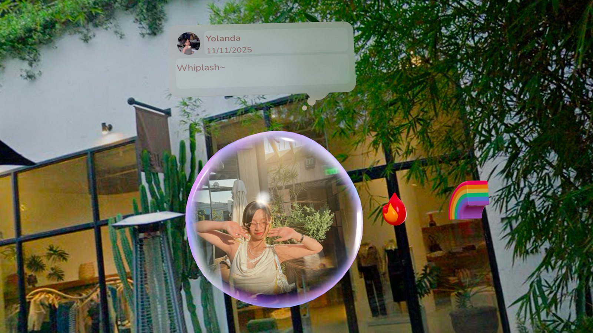
From prototype to product
Landing the bubble with engineering
Our engineers wrote strong front-end and back-end code, but 3D was unfamiliar territory. I used my 3D modeling background to explain the bubble in terms of what it’s made of:
- Mesh
The bubble’s geometry—the surface its content is mapped onto.
- Normals
Which way each part of the surface faces; decides how light and reflections fall.
- Shaders
How the surface is drawn—softness, transparency, sheen—and why one node shader gives many skins.
- Direction
Which way the Echo, its caption, and the light face as the viewer moves.
- Masking
Fitting an image or video inside the bubble and softening its edges.
With that shared vocabulary, the engineers could reason about the bubble themselves instead of treating it as a black box—and the soft Echo from the prototype made it into the app.
Return to the place, or return from elsewhere.
An Echo has to work whether or not you’re standing where it was made, so I designed two states.
| Case 1 / AR Return to the place |
Case 2 / VR Return from elsewhere |
|---|---|
| Condition The user is where the post was created and pinned. |
Condition The user is far away, or the memory came straight from the photo album. |
| Behavior Visual relocalization (LPS / image matching) re-aligns the Echo to the exact spot. |
Behavior The Echo sits in a skybox stitched from Google Street View. |
| Intent Returning to the place becomes part of remembering. |
Intent Revisit without travelling; supports longer, reflective engagement. |
| Support A reference image helps with alignment. |
Alternatives A custom skybox, or a 3D-scanned environment. |
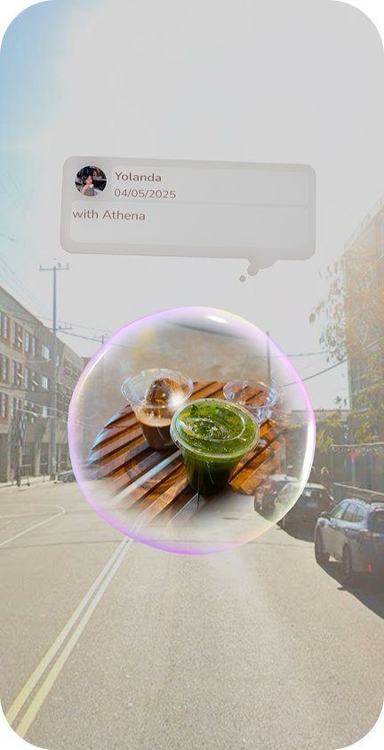
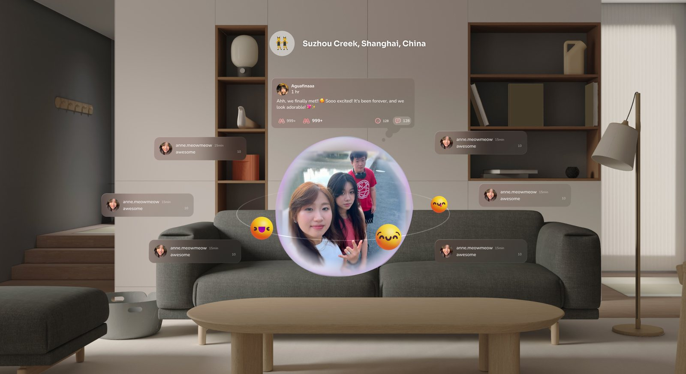
The form held. The social premise didn’t.
The emoji reactions reflect the original idea of a spatial social app. After launch, usage was weaker than expected—and that premise, not the Echo, was what needed rethinking.
Echo stayed as the smallest unit when I reframed AAKO into a spatial memory system.